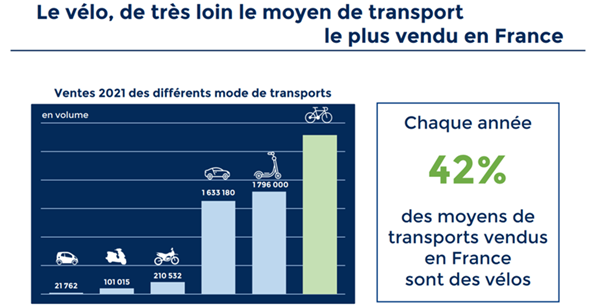
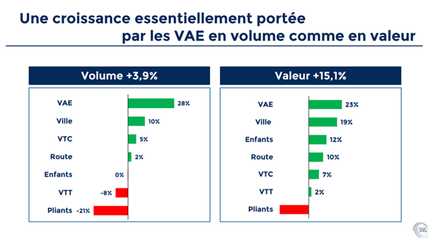
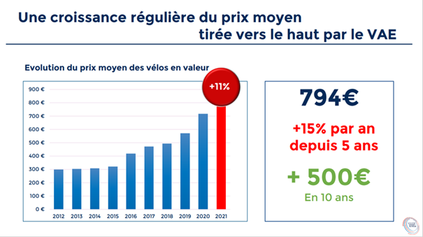
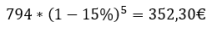
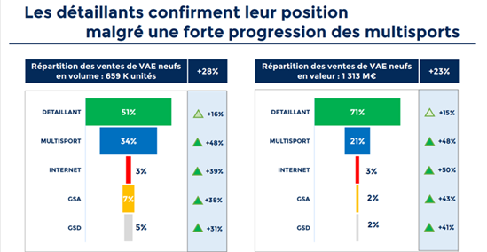
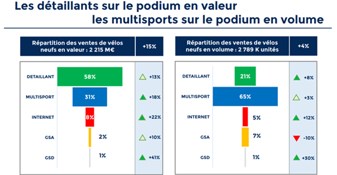
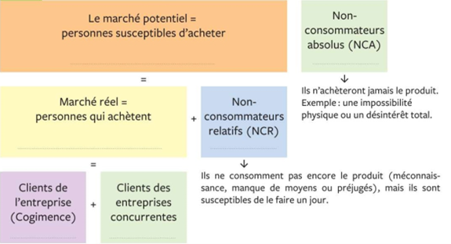

Exercice : Analyse du marché du vélo en 2022
Le vélo, de très loin le moyen de transport le plus vendu en France

Question
Indiquez, en les classant de manière croissante les 3 principaux moyens de locomotion vendus en France en 2022.
Solution
Les 3 principaux moyens de locomotion vendu en France en 2022 et classés dans l’ordre croissant sont :
Les voitures en 3e place
Puis les trottinettes en 2e place
Et enfin les vélos en 1re place.
Une croissance de 43 % en 2 ans, dans un contexte de crise sanitaire
P & A = Pièces et accessoires
Cycles = vélos
Question
Analysez le graphique en comparant notamment les évolutions en quantité et en valeur et indiquez ce que vous pouvez en déduire.
Solution
Entre 2019 et 2020, le marché du vélo, pièces et accessoires compris, a progressé de 25% en valeur, alors qu’il n’a progressé que de 1.75% en quantité :
Ce sont les cycles qui représentent la plus grande part de cette augmentation de valeur (+27.5%).
Toutefois, les Pièces et accessoires ont également fortement augmenté avec +20.8% en valeur.
Cette évolution très forte en valeur sur la période 2019 à 2020, qui n’est pas corrélée avec l’évolution en volume, signifie que c’est la valeur des produits vendus, vélos comme pièces et accessoires qui a très fortement augmentée.
Entre 2020 et 2021 le marché du vélo, pièces et accessoires compris a continué à progresser de 14.3% en valeur en dépit d’une faible augmentation en quantité (+3.9%)
Ce sont à nouveau les cycles qui représentent la part la plus importante de l’augmentation en valeur avec + 15.1%
Toutefois les P&A ne sont pas loin derrière avec une progression de +12.9%.
Le constat est le même entre 2020 et 2021, qu’entre 2019 et 2020. La valeur des produits vendus pour les vélos comme pour les pièces et accessoires a fortement augmentée.
Une croissance portée par les Vélos à Assistance Électrique VAE en volume comme en valeur

Question
Faites le rapprochement avec la question précédente en expliquant pourquoi la progression des ventes en valeur à crue bien plus vite que celle en quantité.
Solution
C’est l’essor des vélos à assistance électrique qui explique que le chiffre d’affaires du secteur à progressé beaucoup plus vite que celui en quantité.
Question
Parmi les produits vendus sur le marché du vélo, distinguez :
ceux qui progressent en valeur, en les classant dans l’ordre décroissant.
ceux qui régressent en volume.
Solution
Les produits qui progressent le plus en valeur sur ce marché sont d’abord le vélo à assistance électrique (VAE +23%), puis le vélo de ville (+19%), suivi du vélo tout chemin (VTC +12%), du vélo de route (+10%), du vélo tout chemin (VTC +7%) et enfin du vélo tout terrain (+2%).
Les produits qui régressent en volume sont le VTT (-8%) et le vélo pliant (-21%).
Une croissance régulière du prix moyen tirée vers le haut par le VAE

Question
Évaluez l’évolution du prix moyens des vélos depuis 5 ans, puis posez une opération afin de déterminer le prix moyen des vélos en 2016.
Solution
Entre 2016 et 2021 le prix moyen des vélos a progressé de 15% par an.
Pour trouver le prix moyen des vélos en 2016, il faut poser l’opération suivante :

Le prix moyen des vélos en 2016 était de 352,30€.
Question
Déduisez du document ce qui explique l'évolution du prix moyen des vélos depuis 5 ans.
Solution
La croissance aussi forte du prix moyen des vélos sur 5 ans s’explique par l’arrivée sur le marché des vélos électriques.
Question
En dépit des bons résultats du secteur, expliquez de manière synthétique les difficultés rencontrées par les fabricants de vélo durant l’année 2021.
Solution
Les fabricants sont confrontés à 4 grands types de difficultés.
Des difficultés d’approvisionnement à cause de la COVID ou de la crise énergétique,
Des difficultés d’approvisionnement depuis l’Asie et de la saturation des moyens de production.
Une flambée des coûts liée au transport, des matières premières et des pièces et composants.
Et enfin ils doivent composer avec un allongement des délais d’approvisionnement.


Question
À l’aide des documents fournis déterminez quels sont les acteurs de la vente de vélos en France.
Solution
Les acteurs de la vente de vélos en France sont les détaillants, les enseignes multisport, les vendeurs sur internet, les grandes surfaces alimentaires et enfin les grandes surfaces de distribution.
Question
Déterminez le circuit de distribution :
qui réalise les meilleures ventes de vélos en volume.
qui réalise le plus gros chiffre d’affaires sur les vélos à assistance électrique.
pour lequel les ventes en volume de vélo régressent.
où les ventes de vélo en quantité ont le plus progressé.
qui a le plus progressé en valeur concernant les vélos à assistance électrique.
Solution
Le circuit de distribution qui réalise les meilleurs ventes en volume est celui des enseignes multisport.
Le circuit de distribution qui réalise le plus gros chiffre d’affaires sur les VAE est celui des détaillants.
C’est dans les grandes surfaces alimentaires que le volume des ventes de vélo régresse.
C’est dans les grandes surfaces de distribution que les ventes de vélo ont le plus progressé (+30%), même si ces ventes ne représentent que 1% du volume global.
C’est le réseau des vendeurs sur internet qui a le plus progressé en valeur avec une augmentation de 50% de leurs ventes, même s’ils ne représentent que 3% de la valeur globale.
Les différents types de marché

Question
Vous décidez de lancer un nouveau vélo sur le marché. A l'aide du document, précisez à quel marché vous allez vous intéresser.
Solution
Vous devez vous intéresser au marché potentiel qui comprend :
le marché réel des personnes qui achètent déjà ce type de produit (voire qui l’achète chez vous),
Et les non-consommateurs relatifs, que vous pourrez peut-être convertir en acheteur de ce produit.
Comment choisir son vélo électrique
Question
Identifiez les critères à prendre en compte dans le choix de son vélo électrique.
Solution
Les critères à prendre en compte sont en lien avec l’utilisation que l’on va en faire et que l’on peut diagnostiquer au travers de différentes questions :
Quel sera l’usage principal ?
Quelles sont les caractéristiques de votre parcours principal ?
Quelle est votre morphologie ? Quelle position souhaitez-vous adopter ?
Avez-vous besoin d’accessoires supplémentaires ?
Le persona marketing
Chaque vélo fabriqué correspond à une clientèle cible précisément identifiée par le constructeur. Afin de mieux représenter cette cible, il est courant de créer un personnage imaginaire incarnant un groupe de consommateurs dans le cadre du développement d’un produit, d’un service ou d’une stratégie marketing globale : c’est ce que l’on appelle un persona marketing.
Exemple de persona pour les services digitaux de la poste.
Le persona est généralement doté d’un prénom et de caractéristiques sociales et psychologiques. Plusieurs personas peuvent être utilisés pour un même projet de développement. Le persona peut être même parfois représenté sous forme de story board en situation d’utilisation du produit ou service.
Un persona créé pour le développement d’un nouveau modèle de voiture citadine pourrait être par exemple :
Caroline
40 ans
2 enfants
urbaine
cadre supérieur
suit de très près la mode
etc.
Les personas sont, entre autres, pris en compte pour le développement des caractéristiques produits / services, pour le développement des contenus d'un site web et pour l'optimisation des parcours client. Ils peuvent être complétés par des cartes d'empathie client.
Question
Par groupe de deux élèves, déterminez, pour chaque type de vélo, la clientèle cible identifiée par les fabricants. Puis, réalisez un persona incarnant ses caractéristiques.
Présentez chacun d’eux sur une feuille A3, qui servira de support pour votre présentation orale.
Indice
La grille à droite est un guide, mais vous devez être plus précis : métier exact + lieu d’habitation + usage du vélo + réseau sociaux (tenir compte de la tranche d’âge et de ses besoins). Les choix doivent être réfléchis car ils devront être justifiés à l’oral. C’est la cohérence qui sera évaluée.
Solution
Réponse libre, tant qu’elle est cohérente.
Question
Maintenant que vous avez un aperçu d’une étude de marché, choisissez un marché qui vous intéresse et faites son analyse :
Besoins et les préférences des consommateurs : En comprenant les attentes des consommateurs, les entreprises peuvent adapter leurs produits ou services pour mieux répondre à leurs besoins.
Taille et la croissance du marché : Une analyse approfondie permet aux entreprises de déterminer la taille potentielle du marché ainsi que son évolution, ce qui est essentiel pour définir des objectifs de croissance réalistes.
Concurrents et leur positionnement : En identifiant les concurrents directs et indirects, ainsi qu'en analysant leurs forces et leurs faiblesses, les entreprises peuvent élaborer des stratégies compétitives efficaces.
Tendances du marché : En surveillant les évolutions du marché, les entreprises peuvent anticiper les changements futurs et se préparer à y réagir de manière proactive.
Indice
Attention ce travail servira d’appui à vos prochaines activités. Il doit être réalisé sérieusement.
Solution
Réponse libre, tant qu’elle est cohérente.